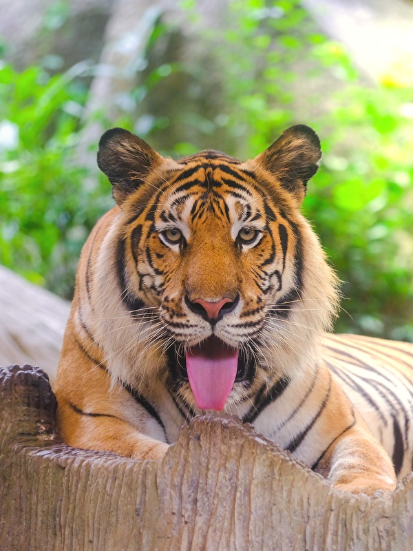
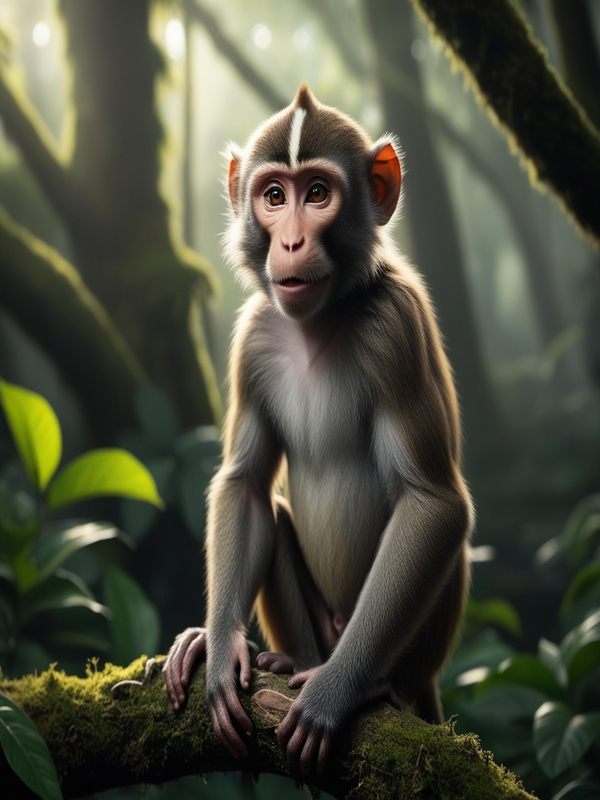
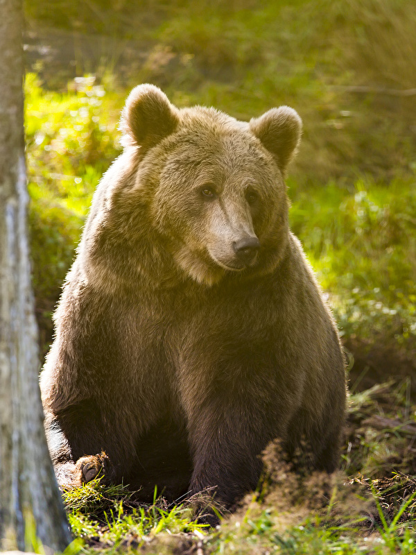

Zoológico Fantástico
- 
- 
-

-

- 
-

Tigre
O tigre (Panthera tigris) é o maior felino do mundo, conhecido por suas listras escuras sobre o pelo alaranjado, que ajudam na camuflagem. Esses animais habitam principalmente florestas e áreas de savana, sendo encontrados em regiões da Ásia, como Índia, Sibéria e Indonésia. A pelagem listrada é única para cada tigre, como uma impressão digital, ajudando a identificar indivíduos.
Esses felinos são caçadores solitários e altamente territoriais, caçando mamíferos grandes, como cervos e javalis. Sua estratégia de caça envolve surpreender a presa, usando sua força e agilidade para abater rapidamente
Infelizmente, tigres estão em perigo de extinção devido à caça ilegal e à destruição de seus habitats.
Macaco-Prego
O macaco-prego (Sapajus spp.) é um primata encontrado nas florestas da América do Sul, incluindo o Brasil. Ele é conhecido por sua inteligência e habilidade com ferramentas, utilizando pedras e galhos para acessar alimentos, como nozes e sementes.
Vivem em grupos sociais bem estruturados, liderados por machos dominantes, e têm comportamentos comunicativos, como vocalizações e gestos. Sua dieta é variada, incluindo frutas, insetos, pequenos vertebrados e folhas, o que os torna adaptáveis a diferentes ambientes.
Apesar de sua adaptabilidade, o macaco-prego enfrenta ameaças como a destruição de habitats e a captura para o comércio ilegal.
Urso
O urso é um mamífero da família Ursidae, conhecido por sua força, inteligência e comportamento adaptável. Existem várias espécies, como o urso-pardo, o urso-polar e o urso-negro, espalhadas por diferentes regiões do mundo, desde florestas temperadas até o Ártico. Seu tamanho e pelagem variam conforme a espécie e o habitat.
Onívoros, os ursos têm uma dieta diversificada que inclui frutas, peixes, mel, insetos e até carne, dependendo da espécie e da disponibilidade de alimentos.
A destruição de habitats e a caça ilegal ameaçam várias espécies de urso, como o urso-panda e o urso-polar.
Lobo
O lobo (Canis lupus) é um mamífero carnívoro da família dos canídeos, conhecido por sua força, inteligência e organização social. Habita regiões diversas, como florestas, montanhas e tundras, principalmente no Hemisfério Norte.
Vivem em alcateias lideradas por um casal alfa e exibem comportamento cooperativo, especialmente durante a caça. Sua dieta inclui cervos, alces, coelhos e outros animais, mas também se adaptam a oportunidades, consumindo frutos ou carcaças. Lobos são rápidos e resistentes, capazes de percorrer longas distâncias.
Apesar de sua importância no equilíbrio ecológico, os lobos enfrentam perseguição humana e perda de habitat.
Onça-Pintada
A onça-pintada (Panthera onca) é o maior felino das Américas e é facilmente reconhecida por sua pelagem amarela com manchas negras, que fornecem camuflagem em florestas e savanas. Habita principalmente áreas da América Central e do Sul, incluindo a Amazônia e o Pantanal, adaptando-se a diversos ambientes.
Caçadora solitária, a onça é conhecida por sua força e mordida poderosa, capaz de perfurar carapaças de tartarugas e ossos de grandes presas. Alimenta-se de capivaras, jacarés, peixes e outros animais, sendo uma predadora de topo, essencial para manter o equilíbrio ecológico.
A espécie enfrenta ameaças como desmatamento e caça ilegal, que diminuem suas populações.
Leão
O leão (Panthera leo) é um dos maiores felinos do mundo, conhecido como o "rei da selva" por sua imponência e presença em savanas e florestas da África e, em menor número, na Índia.
Leões são sociais e vivem em grupos chamados alcateias, liderados por um ou mais machos dominantes. Sua dieta consiste principalmente de grandes herbívoros, como zebras e antílopes, caçados em estratégias cooperativas pelas leoas, enquanto os machos defendem o território.
Apesar de sua fama, leões estão ameaçados pela perda de habitat e pela caça.